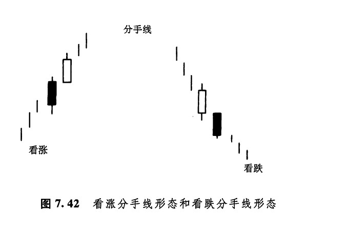

在第六章，我们曾经研究了反击蜡烛线形态。回忆一下，反击线形态是一种二蜡烛线形态，前后两根蜡烛线颜色相反，并且后一根蜡烛线的收市价与前一根的收市价处于同一水平。这一形态属于反转信号。如图7.42所示的分手线形态也是由两根颜色相反的蜡烛线组成的，但是同反击线形态不同的是，分手线形态的两根蜡烛线具有相同的开市价。分手蜡烛线形态属于持续信号。
在市场上涨的过程中，如果出现了一个黑色实体（尤其是出现相对较长的黑色实体时），对于持有多头的市场参与者来说，可能成为一块心病。他们满腹狐疑，“熊方或许正在争得主动权？”无论如何，如果下一天开市时市场向上跳空，开市价回到了前一根黑色蜡烛线的开市价的水平，就说明熊方已经失去了对市场的控制。如果后面这根白色蜡烛线进一步向上收市在较高的水平，则说明牛方已经重新执掌了大权，先前的上涨行情将继续发展。上述情形就是如图7.42所示的看涨分手线形态的演变过程。在这类形态中，白色蜡烛线同时还应当是一根看涨捉腰带线（即其开市价位于当日的最低点）。在图7.42中，看跌的分手线形态与上述形态完全对应，但方向相反。一般认为，这类形态属于看跌的持续形态。

下一篇：第八章 神奇的十字线
上一篇：前进白色三兵形态